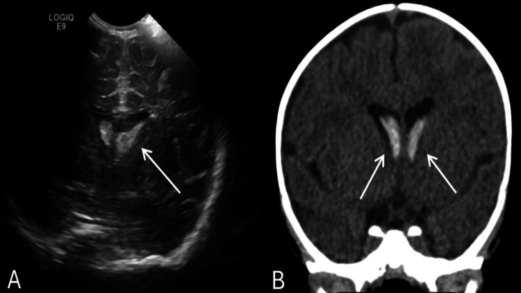

650 — Thần kinh nhi: xuất huyết mầm Papile & u hố sau / Peds neuro
Tags: pattern:xuat-huyet-mam pattern:u-ho-sau-nhi vung:nao-nhi score:Papile
Mức chắc chắn (certainty): tổng hợp y văn (literature synthesis) — nhóm tự biên từ y văn mở, chưa gắn ca nguyên văn đơn lẻ.
1. Tổng quan — mầm non tháng dễ vỡ + hố sau 70% u nhi + ADC là danh tính
- Vùng mầm (germinal matrix) non tháng < 32 tuần/tuần < 1.500 g: mạch non + tự điều hòa kém — TẠI SAO Papile I→IV theo lan tràn: rãnh nhân đuôi-đồi (I) → não thất không giãn (II) → giãn cấp (III) → nhu mô (nhồi tĩnh mạch xuất huyết, IV).
- Medulloblastoma (đường giữa, WHO 4): tế bào dày đặc — TẠI SAO CT tăng + T2 tối + DWI sáng rực ADC < 0,7: mật độ nhân cao nhất u nhi.
- Sao bào lông (bán cầu, WHO 1): nang + nốt ngấm — ADC > 1,4 (lỏng lẻo); ependymoma dẻo chui Luschka/Magendie; DIPG phình cầu > 50% ôm thân nền.
2. Gamut sơ sinh non + u hố sau (Gamut)
- Rãnh đuôi-đồi + không giãn: Papile I–II — theo dõi + siêu âm thóp chuỗi.
- Giãn cấp + nhu mô: Papile III–IV — dẫn lưu + theo dõi não úng thủy.
- Đường giữa + DWI rực + gieo màng: medulloblastoma — MRI toàn trục + mổ + hóa-xạ.
- Nang + nốt + ADC cao: sao bào lông — mổ khỏi (tốt nhất u nhi!).
3. Bảng so sánh phân biệt (ma trận đối chiếu)
| Thực thể (entity) | Hình ảnh điển hình | Chốt vào (rule-in) | Chốt loại (rule-out) | Gợi ý xác nhận |
|---|---|---|---|---|
| Papile I–II | Rãnh đuôi-đồi + thất không giãn | Non tháng + thóp + không giãn | Giãn cấp → III | Chuỗi thóp + theo dõi |
| Papile III–IV | Giãn cấp + nhu mô (nhồi TM) | Máu > 50% thất/nhu mô | Không máu → PVL | Dẫn lưu + chống úng thủy |
| Medulloblastoma | Đường giữa + DWI rực ADC < 0,7 + gieo màng | Rực + gieo + đường giữa | Nang nốt + ADC cao → sao bào | Toàn trục + mổ + hóa-xạ |
| Sao bào lông | Nang + nốt ngấm + ADC > 1,4 | Nốt + bán cầu + ADC cao | Rực + đường giữa → medullo | Mổ khỏi (tiên lượng tốt!) |

(A) US: đồi phải tăng âm + lan thất + mầm 2 bên; (B) CT: máu thất 2 bên. Nguồn: Abdulsalam et al., Cureus 2026 Fig. 1, CC BY 4.0.4. Protocol thần kinh nhi
- Siêu âm thóp chuỗi + MRI (DWI/ADC) + toàn trục khi u hố sau; Papile III–IV theo dõi úng thủy + can thiệp.
flowchart TD
A[Non tháng/u hố sau] --> B{Máu hay u?}
B -->|Rãnh + thất| C[Papile I-IV: thóp chuỗi]
B -->|Đường giữa + DWI rực| D[Medullo: toàn trục]
B -->|Nang + nốt| E[Sao bào: mổ khỏi]
5. Cạm bẫy
- Nôn + mắt lạ tưởng dị ứng sữa (ca trên!) — non tháng + mắt + thóp là siêu âm sọ ngay.
- PVL tưởng Papile — PVL là trắng quanh thất không máu, Papile là máu rãnh/thất.
- Medullo không chụp toàn trục sót gieo màng — DWI rực đường giữa là toàn trục trước mổ.
6. Tự lượng giá — Blind Quiz
Ca 1 — Trẻ 2 tháng non 36 tuần nôn + mắt nhìn lên + mất nhìn theo. Đọc US + CT.
- Hỏi: máu ở đâu? Papile mấy? U hay máu?
Bấm để hiện đáp án
- Dấu hiệu (findings): đồi phải tăng âm 2,7 cm + lan thất 2 bên + mầm rãnh đuôi-đồi 2 bên.
- Chẩn đoán (diagnosis): xuất huyết đồi + não thất + mầm (GMH-IVH) — bảo tồn + theo dõi (đừng mổ u oan; dị ứng sữa là bẫy!).
- Nguồn: Abdulsalam et al., Fig. 1, CC BY 4.0.
Ca 2 — U nhộng tiểu não + DWI rực + nốt màng tủy: medullo hay sao bào? (Bảng mục 3.)
Bấm để hiện đáp án
- Medulloblastoma: MRI toàn trục + mổ + hóa-xạ (sao bào là nang nốt + ADC cao).
Bài liên quan chéo
- 600 – Tổng quan Nhi
- 450 – Mắt nhi (retinoblastoma)
- 213 – U não (người lớn)
Không dùng để chẩn đoán độc lập khi chưa có người hướng dẫn.